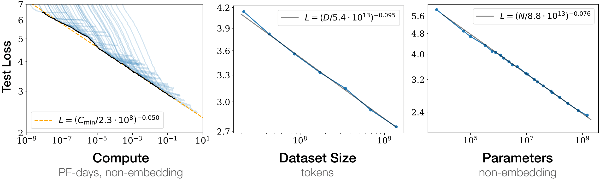
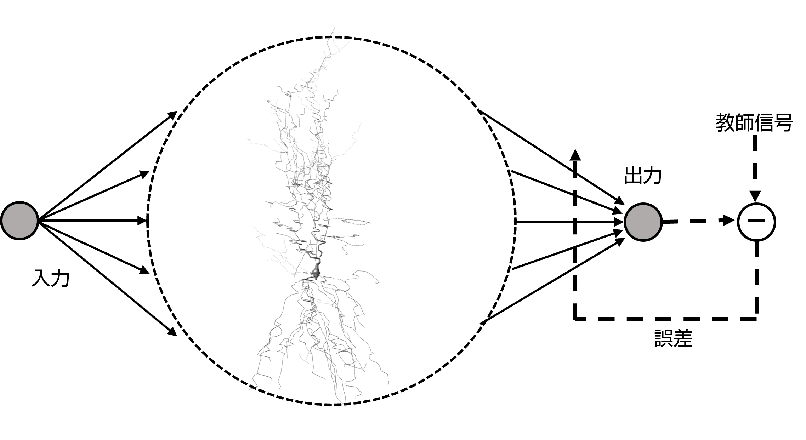
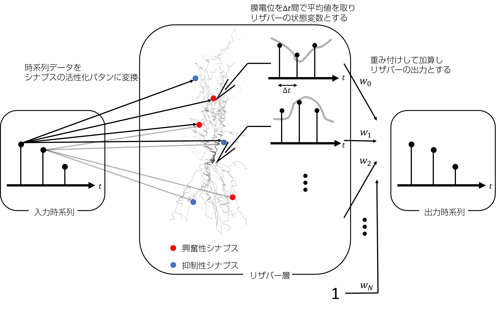
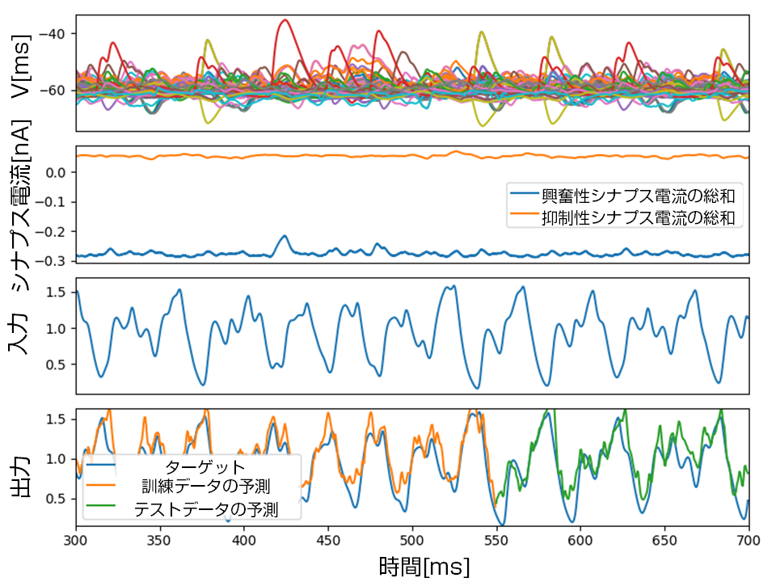
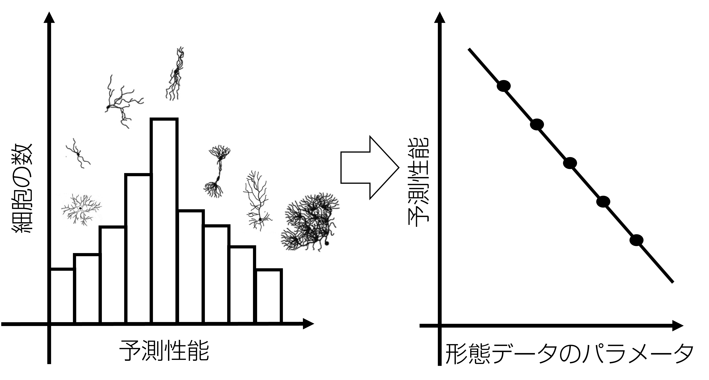
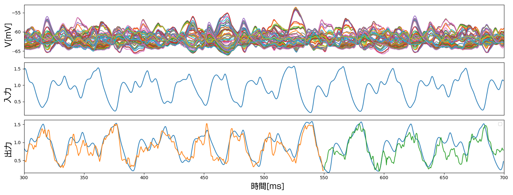
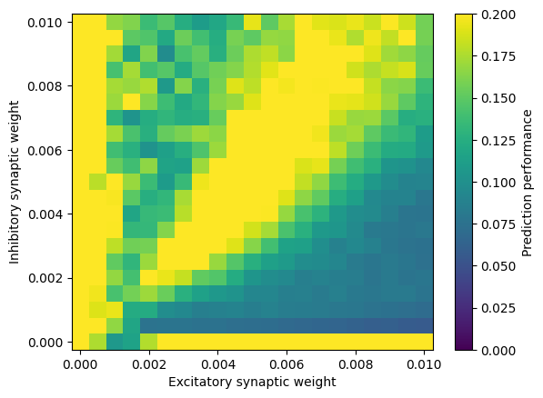
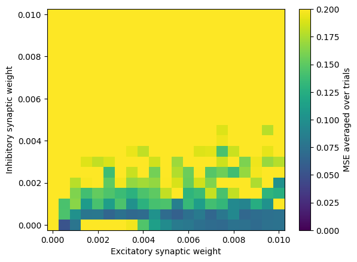

NeuMoReservoir
神経細胞の形態が生み出す時空間ダイナミクス
深水 智史
深水 智史
出身:宮崎県
趣味:バスケットボール、ちいかわ
九州工業大学 大学院生命体工学研究科 M2
好きなソフトウェア
研究
- 脳の発火パターン・同期現象の研究
- 脳の情報処理を数理モデルで解明したくて研究を始めた
- たまたまスーパーコンピュータ富岳を使える機会に巡り合わせたので、
大規模なシミュレーションもやりたかった
背景
脳
ヒト脳は
960億個の神経細胞と
100兆個のシナプスから成る
Herculano-Houzel, 2009
大規模言語モデルは、モデルのパラメータ数に対して性能を向上させる
Kaplan et al., 2020
神経形態:計算能力を宿す構造
現在の大規模脳シミュレーション研究の方向性
Reimann et al., 2024
Romani et al, 2024
背景
リザバーコンピューティング
Jaerger and Haas, 2004, Maass et al., 2002
- リカレントニューラルネットワークモデルとして提案された
- リザバー層の結合重みを学習する必要がない
- Echo State Property, 短期記憶,一般化同期
Nakajima et al., 2009
- 形態学的コンピューティング 生物の形を活かした計算の枠組み
- タコ腕を模したソフトロボティクス
本プロジェクトのリザバーコンピュータ
NeuroMorphological Reservoir
神経形態学的
NeuMoReservoir
多様な形態を有する神経細胞や
遺伝子変異による形態の変化を
Echo State Propertyの変化として捉える
初期検証
初期検証-結果-
目的
- 多様で複雑な形態を有する単一の神経細胞で発生する時系列情報処理の原理を明らかにすることで、脳の理解を目指すこと
- 単一の神経細胞の情報処理原理から、工学的な脳情報処理モデルを構築すること
目標
- 様々な神経細胞の形態データを用いてリザバーコンピューティングを行うためのシミュレーション環境を整備し、性能評価を行う
- 神経細胞の形態と、非線形現象、更には情報処理能力の関係性を明らかにすること
- 作成したソフトウェアをオープンソースとして公開する
本プロジェクトの最終成果物
本プロジェクトの最終成果物
- 神経細胞の機能と形の関係性の解明
- 生物らしい柔らかい情報処理の工学的実現
- 神経疾患メカニズムの解明と、診断技術への昇華
このシステムについてわかってきたこと
このシステムについてわかってきたこと
簡単な空間形状でもリザバーになる
簡単な空間形状でもリザバーになる
簡単な空間形状でもリザバーになる


それでもやはり、形態の違いが性能に影響するらしい
それでもやはり、形態の違いが性能に影響するらしい
プルキンエ細胞

それでもやはり、形態の違いが性能に影響するらしい
プルキンエ細胞
錐体細胞

9ヶ月間よろしくお願いいたします